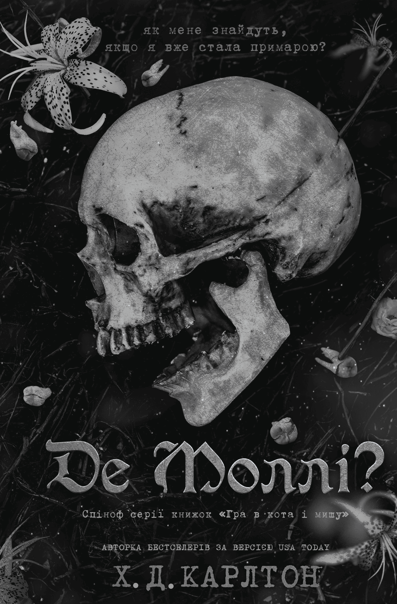
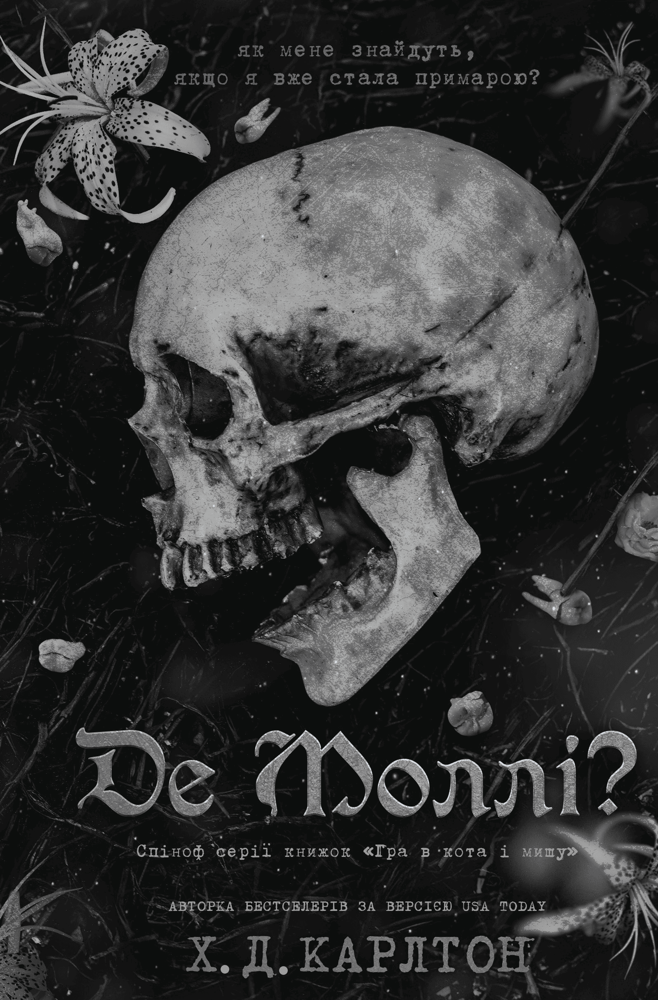

| № | Назва товару та фото | Короткий опис | Посилання |
|---|---|---|---|
| 1 |
Переслідування Аделіни
|
Аделіна, якарозслідує таємниці родини після знаходження щоденника. Це приводить її до небезпечного Товариства, що займається торгівлею людьми. | Перейти |
| 2 |
Полювання на Аделіну |
Аделіна, викрадена торговцями людьми, яка вирішує помститися за пережите з допомогою загадкового переслідувача. | Перейти |
| 3 |
Де Молі?  |
Моллі, яку викрали та продали в рабство її батьки. Вона намагається втекти від жахливого минулого та врятувати свою сестру. | Перейти |